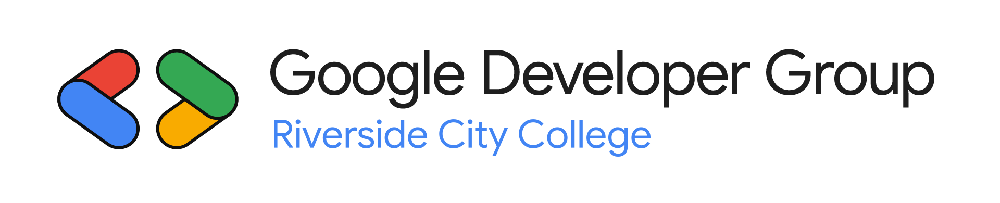
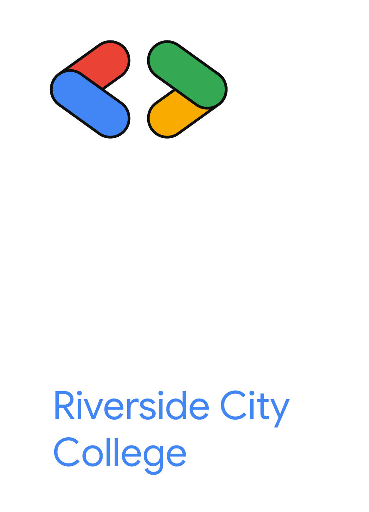

This week
Stand out before you transfer.
Research, jobs, internships, and transfer programs you can apply to from RCC.
GDG on Campus Riverside City College is an independent group; our activities and the opinions expressed here should in no way be linked to Google, the corporation.
Due before winter break.
2026
- Nov 21 · Cutie Hack at UCR
- Nov 30 · UC and CSU applications
- Nov 30 · CSU pathway, first term only
- Dec 9 · Jack Kent Cooke scholarship
Due January to March.
2027
- Jan 6 · DOE national lab internships
- Jan 17 · RCCD Foundation scholarships
- Jan 26 · NIH summer internships
- Feb 15 · Cal Poly Pomona summer research
- Mar 1 · NASA internships
DOE Community College Internships · Jan 6
10 weeks at a national lab, only for community college students.
$650 a week plus housing help. 2.7 GPA, US citizen or permanent resident.

UC Transfer Admission Guarantee
TAG guarantees you a spot at one of six UCs.
File it September 1 to 30, the year before you transfer. Check your major: Davis and Irvine left out CS for fall 2027.

Before you go
Every link from today.
The PDF is on the Discord.
GDG on Campus Riverside City College is an independent group; our activities and the opinions expressed here should in no way be linked to Google, the corporation.